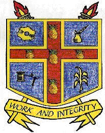

"Work and Integrity"

At the initiative of Vernie
Green, on June 6, 1985, five past students of the St. Elizabeth Technical
High School in Santa Cruz, St. Elizabeth, Jamaica, met and formed
the STETHS Past Students Association of Canada. They were:
(1) Garry Bent who was elected
president. He served as president from 1985 to 1990.
(2) Vernie Green who was elected co-ordinator. At a later date he
served as public relations officer.
(3) Clem Blair who was elected vice president. He is presently the
activities co-ordinator.
(4) Dee Blake who was elected treasurer. He is presently the president,
serving since 1990.
(5) Leon Barrett who was elected secretary. He is presently the secretary/treasurer.
Since our formation over
15 years ago, others have come on board. They have made and some are
still making their significant contributions to the continued existence
of our association. I will attempt to list these fellow past students.
If I miss anyone, be assured it was not intentional. If such persons
will contact us, we will make amends.
The persons are Hortell
Barham (former activities co-ordinator), Burnice Frazer (presently
vice president), Ron Newell, Reggie J. Clarke (former teacher at STETHS),
Iolda Fraser, Aaron Harrison (former secretary), Cleve Taylor (former
treasurer and public relations officer), Sylvan Lalor (former vice
president), Jean Reynolds, Patricia Porter, Lorna Jones, Lorna Jhagroo,
Pauline McKitty-Robinson, Evadne Scarlett and Wesley Parchment.
Since our formation, we
have been working on two sets of activities - one to benefit our alma
mater and the other in the interest of our organization. For example,
we have donated a computer system, sports equipment and money to STETHS.
In the last few years, the money we sent has been used to reduce the
outstanding debt students owe the school.
In the interest of our children,
every year we sponsor a Children's Christmas Party and a summer picnic
where presents and prizes are distributed and awarded. We also make
a contribution when there is a birth or death in the family. In addition
we have been presenting to our children, who are presently enrolled
in a post-secondary institution or who have recently graduated from
one, funds to encourage them to continue to pursue post-secondary
education.
The awards are generally
presented at our annual fundraising function in October. The awards
are usually presented to past students, children of our regular supporters,
and children of past students who are in colleges or universities.
As the most progressive alumni association in Greater Toronto, members
of our association believe that if our children work their way through
secondary school and are motivated to pursue studies at the college
and university levels, ALL should be encouraged in a tangible way,
not only the brightest and best. The last set of awardees were Robert
Blake, Leon Barrett Jr., Dean Barham, Jean Carnegie-Clarke, and Antonette
Gentles. Financial contributions to the tertiary education of our
children will be an annual event.
Special thanks to our spouses
or significant others for their support. On behalf of our association
I would also like to pay tribute to the members and their spouses
of the former Magnificent 7+. They have been like family to us, supporting
our many functions. Special thanks also to Colin Vern who over the
years has been and continues to play a significant role in publicizing
our events.
A final thank you to all
those other persons who have supported us over these years. Your contributions
are greatly appreciated. They have enabled us to pursue some of our
goals. We hope you will continue to support our many activities.
Leon A. Barrett
STETHS currently does not have
a Web Site.
|